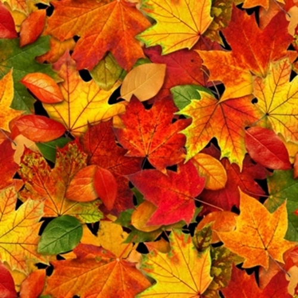

The Four Seasons
Fall
Autumn, also known as fall in American English and sometimes in Canadian English, is one of the four temperate seasons. Autumn marks the transition from summer to winter, in September (Northern Hemisphere) or March (Southern Hemisphere), when the duration of daylight becomes noticeably shorter and the temperature cools considerably. One of its main features is the shedding of leaves from deciduous trees.

Some cultures regard the autumnal equinox as "mid-autumn", while others with a longer temperature lag treat it as the start of autumn. Meteorologists (and most of the temperate countries in the southern hemisphere)[3] use a definition based on Gregorian calendar months, with autumn being September, October, and November in the northern hemisphere, and March, April, and May in the southern hemisphere.
In North America, autumn traditionally starts on September 21 and ends on December 21. It is considered to start with the September equinox (21 to 24 September) and end with the winter solstice (21 or 22 December). Popular culture in the United States associates Labor Day, the first Monday in September, as the end of summer and the start of autumn; certain summer traditions, such as wearing white, are discouraged after that date. As daytime and nighttime temperatures decrease, trees shed their leaves. In traditional East Asian solar term, autumn starts on or around 8 August and ends on or about 7 November. In Ireland, the autumn months according to the national meteorological service, Met Éireann, are September, October and November. However, according to the Irish Calendar, which is based on ancient Gaelic traditions, autumn lasts throughout the months of August, September and October, or possibly a few days later, depending on tradition.[citation needed] The names of the months in Manx Gaelic are similarly based on autumn covering August, September and October. In Argentina, Australia and New Zealand, autumn officially begins on 1 March and ends on 31 May.